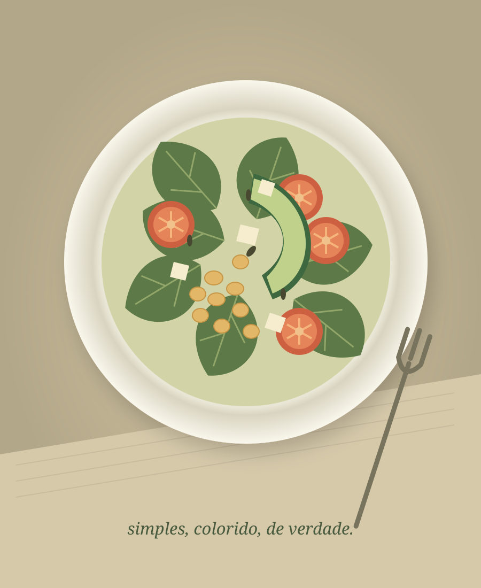

◌
Reeducação alimentar
Construa hábitos com autonomia e descubra como comer melhor sem abrir mão do prazer à mesa.
Quero saber mais ↗● NUTRIÇÃO QUE ACOLHE
Uma alimentação que faz sentido para você, para sua rotina e para a vida que você quer viver.
Comece a cuidar de você ↗Mais equilíbrio no prato.
Mais tranquilidade na sua relação com a comida.

NUTRIR O CORPO. RESPEITAR SUA HISTÓRIA.
PRAZER, SOMOS A NUTRIR
Acreditamos que cuidar da alimentação não precisa ser uma lista de proibições. Precisa de escuta, conhecimento e espaço para o que é importante para você.
Aqui, cada história é única. O acompanhamento considera sua rotina, suas preferências e seus objetivos para construir mudanças possíveis e duradouras.
Conheça nossa forma de cuidar ↗CUIDADO QUE SE ADAPTA A VOCÊ
Não existe uma fórmula para todo mundo.
Existe o que funciona para você.
Construa hábitos com autonomia e descubra como comer melhor sem abrir mão do prazer à mesa.
Quero saber mais ↗Um olhar individual para seus objetivos, respeitando seu corpo e promovendo qualidade de vida.
Quero saber mais ↗Estratégias práticas para organizar suas refeições e fazer escolhas possíveis, mesmo nos dias corridos.
Quero saber mais ↗UM PASSO DE CADA VEZ
Você não precisa ter todas as respostas para começar. Vamos encontrar esse caminho juntos.
Quero dar o primeiro passo ↗Um primeiro encontro para conhecer sua história, seus hábitos e o que você deseja transformar.
Orientações construídas com você, considerando suas preferências e necessidades.
Acompanhamento para ajustar estratégias, acolher desafios e reconhecer cada conquista.
ESSE É O NOSSO PONTO DE PARTIDA.
PODEMOS TE AJUDAR?
A consulta acontece por videochamada, com espaço para conversar sobre sua rotina e receber orientações individualizadas. Os detalhes serão informados pela profissional.
A proposta é encontrar equilíbrio e considerar suas preferências. Restrições específicas, quando necessárias, devem ser avaliadas individualmente pela nutricionista.
Não. O acompanhamento também pode ajudar na organização da alimentação, na construção de hábitos e em uma relação mais tranquila com a comida.
A frequência é combinada conforme suas necessidades e o formato de acompanhamento escolhido, após a avaliação inicial.
SEU PRÓXIMO PASSO PODE SER SIMPLES
Seu cuidado começa com uma conversa.
Atendimento online e presencial*
Este é um modelo de demonstração. O contato e as modalidades de atendimento serão adicionados na personalização.